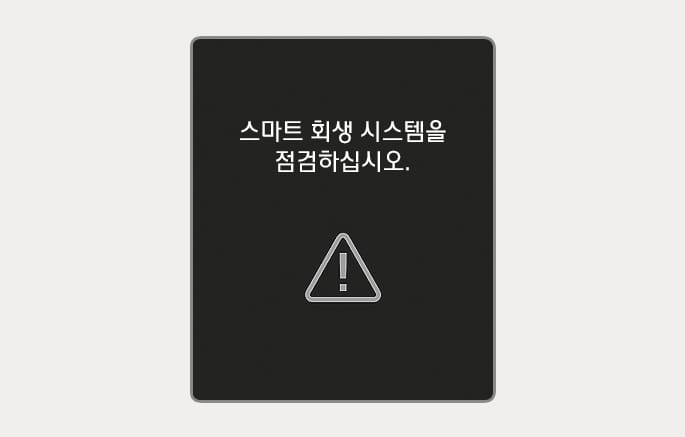

센서 관련 주의사항
2C_FrontRadar
- 전방 레이더
스마트 회생 제동 시스템은 전방 레이더를 이용해 전방 차량과의 거리를 감지하고 회생 제동량을 적절히 조절합니다.
전방 레이더를 깨끗하게 유지하십시오. 전방 레이더나 레이더 커버가 눈, 빗물 또는 기타 이물질로 오염되는 경우 감지 성능이 저하되어 스마트 회생 제동 기능이 꺼질 수 있습니다.
센서 이상으로 인한 시스템 경고
-

2C_CheckSmartRegenerationBrakingSystem
전방 레이더가 오염되거나 가려져 스마트 회생 제동 기능이 꺼진 경우, 시스템 점검을 요청하는 경고문이 표시되고, 회생 제동 단계 표시등이 'AUTO'에서 현재 회생 제동 단계로 변경됩니다.
-
이물질을 제거한 후 스마트 회생 제동 기능을 다시 켜려면 회생 제동 감소 레버(
² )를 1초 이상 당기십시오.
이물질을 제거한 후에도 경고문이 계속 표시되는 경우 당사 직영 하이테크센터나 블루핸즈에서 차량을 점검하십시오.